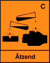

| Betriebsanweisung Nr. Gem. § 20 GEFSTOFFV | Betrieb: |
Baustelle/tätigkeit:
 |
Calciumoxid |
Einatmen, Verschlucken (Essen, Trinken, Rauchen mit beschmutzten
Händen) können zu Gesundheitsschäden führen.
Kann reizen. Augenschäden möglich. Reagiert mit Wasser
unter Wärmeentwicklung, Spritzgefahr! Reagiert mit Säuren
unter Wärmeentwicklung, Spritzgefahr! Beim Verdünnen
dem Wasser zugeben, nie umgekehrt. Wassergefährdend -
Eindringen in Boden, Gewässer und Kanalisationen vermeiden!
Staubentwicklung vermeiden! Berührung mit Augen, Haut und
Kleidung vermeiden! Im Arbeitsbereich keine Lebensmittel aufbewahren,
nicht essen, trinken, rauchen! Nach Arbeitsende und vor jeder
Pause Haare und Haut gründlich reinigen! Produktreste von
den Händen entfernen! Hautpflegemittel verwenden! Stark verunreinigte
Kleidung wechseln! Nach Arbeitsende Kleidung wechseln! Straßenkleidung
getrennt von Arbeitskleidung aufbewahren!
Augenschutz: Schutzbrille (Korbbrille)!
Atemschutz: Partikelfilter (mind. FFP 2)
Handschutz: Schutzhandschuhe aus z. B.: Butylkautschuk,s
Viton, Polychloropren.
Beim Tragen von Handschuhen ist eine spezifische Hautschutzsalbe
empfehlenswertl
Hautschutz: Fetthaltige Hautschutzsalbe für alle unbedeckten
Körperteile verwendenl
|
Reste unter Staubvermeidung aufnehmen! Calciumoxid brennt selbst
nicht. Brände in der Nähe trocken löschen! Löschwasser
bildet mit dem Produkt eine ätzende Lauge.
Zuständiger Arzt oder Klinik:
Fluchtweg:
Unfalftelefon:
|
|
Bei jeder Erste-Hilfe-Maßnahme: Selbstschutz
beachten und umgehend Arzt verständigen.
Nach Augenkontakt: Unter Schutz eines evtl. unverletzten Auges
sofort bei gespreizten Lidern gründlich und ausgiebig mit
Wasser spülen. Schnell für ärztliche Behandlung
sorgen!
Nach Hautkontakt: Mit viel Wasser gründlich spülen.
Nach Einatmen: Frischluft! Körperruhe! Vor Wärmeverlust
schützen! Schnell für ärztliche Behandlung sorgen!
Nach Verschlucken: Erbrechen nicht anregen! Reichlich Wasser
in kleinen Schlucken trinken lassen! Körperruhe! Vor Wärmeveriust
schützen! Schnell für ärztliche Behandlung sorgenl
Erstheifer:
|
|
Zur Entsorgung sammeln in:
Hinweis für den Unternehmer:
Die fehlenden betriebs- und baustellenbezogenen Angaben
- wie z. B: "Betrieb", "Baustelle/Tätigkeit,
zuständiger Arzt oder Klinik" usw. - sind jeweils
einzutragen.
Unterschrift des Unternehmers: ___________________________